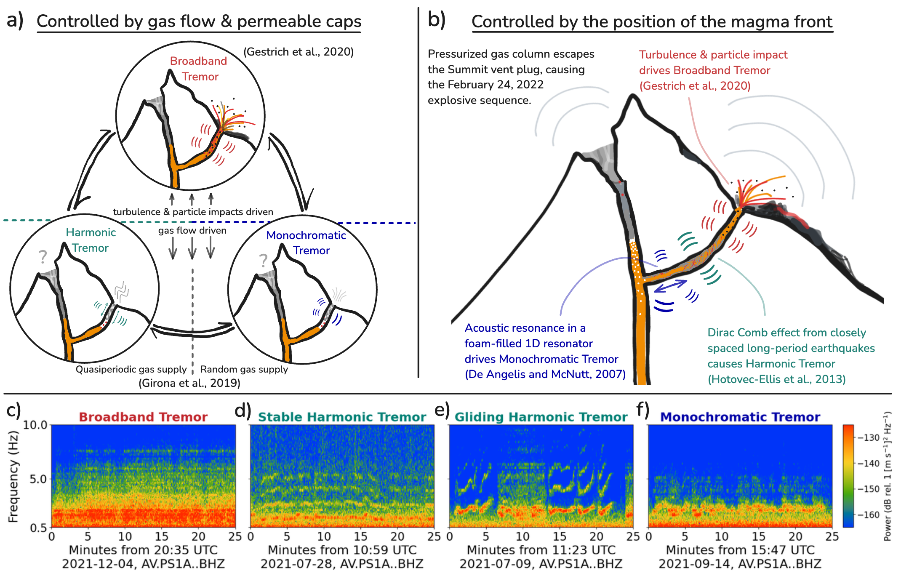
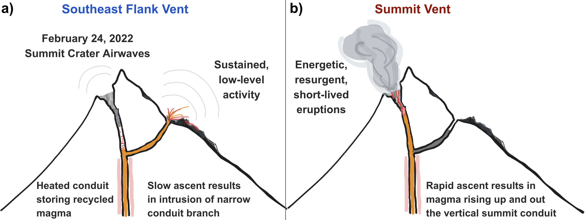
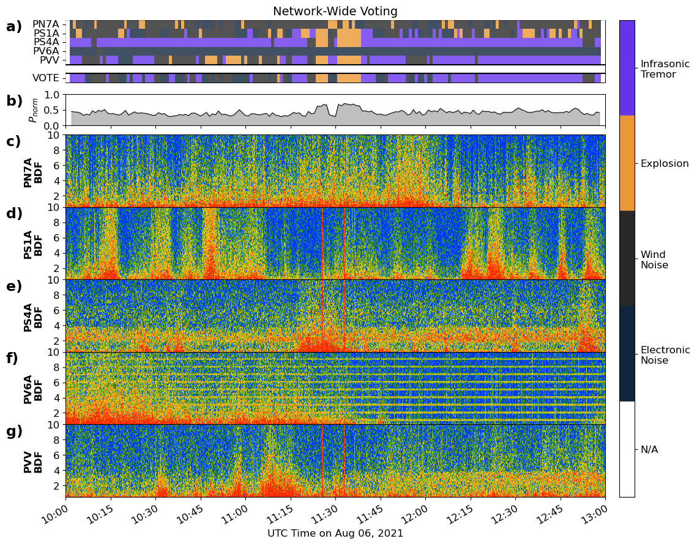

Research
Tremor Mechanisms and Conceptual Model for Pavlof Volcano, Alaska
Pavlof Volcano, a stratovolcano located in the the Alaska Peninsula, is one of the most frequently active volcanoes in North America with more than 40 confirmed eruptions since observations began in the early 1800s. Despite its eruption frequency, Pavlof is known to be a challenging volcano to monitor, owing to its relative lack of anomalous seismic rates prior to its eruptions, short eruption run-up times, and variability in eruption explosivity. Pavlof Volcano primarily exhibits seismic tremor, which we detect and model in this work currently under review at the Journal of Volcanology and Geothermal Research.
 Fig 1. Cartoon illustrating proposed tremor model scenarios for Pavlof Volcano. a) Tremor model scenario controlled by gas flow and the existence of a gas pocket trapped under a permeable cap, following harmonic and monochromatic tremor inferences from Girona et al. (2019) and the broadband tremor model of Gestrich et al. (2020). b) Tremor model scenario controlled by the position of the magma front, where the Dirac Comb effect produced by periodic LP occurrences and the resonance of a one-dimensional oscillator explain harmonic and monochromatic tremor. Similar to a), the broadband tremor model of Gestrich et al. (2020) is preferred. c-f) Selected examples of broadband tremor, stable harmonic tremor, gliding harmonic tremor, and monochromatic tremor from Pavlof Volcano’s 2021–22 eruption.  Fig 2. Conceptual model of Pavlof’s shallow plumbing system. We propose the presence of a shallow T-junction located a few hundred meters beneath the edifice, linking the summit vent and southeast flank vents. This bifurcated conduit system likely governs the shallow partitioning of exsolved volatiles and accommodates our proposed tremor-generating mechanisms. a) Southeast flank eruptions (e.g., 2007, 2021-2022) involve slowly ascending, gas-poor magma. Due to the slow rise of magma, precursory unrest signals are detected, and the angled conduit branch directs the magma towards the southeast flank vent. b) Summit vent eruptions (e.g., 2013, 2014, 2016) are driven by gas-rich magma that ascends and fragments rapidly, erupting directly upward and bypassing the angled conduit branch. These intense eruptions occur with little to no precursors and are marked by abrupt increases (and decreases) in seismic amplitudes.A link to our manuscript will be added here upon successful journal review and publication.
Volcanic Tremor Detection using Machine Learning
Volcanic tremor is a semi-continuous seismic and/or acoustic signal that is challenging to detect reliably due to its highly variable amplitudes, durations and spectral features. Machine learning offers a fast, robust and automated method to detect and characterize tremor in high temporal resolution for volcano monitoring and research purposes. We construct a labeled dataset and train a pair of station-generic Convolutional Neural Networks (one for seismic, one for infrasound) to identify different types of tremor and impulsive signals across the 2021-2022 eruption of Pavlof volcano, Alaska.
 Fig 3. Selected classes for labeling for both data types, separated by Label Studio screenshots. Classes are determined from the variety of signals observed during the 2021-2022 eruption. Examples above are obtained from July-August 2021.
Fig 3. Selected classes for labeling for both data types, separated by Label Studio screenshots. Classes are determined from the variety of signals observed during the 2021-2022 eruption. Examples above are obtained from July-August 2021.
After training the station-generic models on two month of labeled spectrograms each, we use them to classify short sequences of seismic and acoustic tremor, shown below. In order to reduce misclassifications, we use a station-based majority voting system to determine the final decided class (Fig. 4 & 5). Tremor classes are prioritized over impulsive signals if equal votes are encountered.
Fig 4. Comparison between individual station predictions and station-based voting results against a 3 hour seismic spectrogram. Station-based voting helps to constrain the sequence of observed signals more reliably, as seen in instances where some stations are misclassified.  Fig 5. Comparison between individual station predictions and station-based voting results against a 3 hour infrasound spectrogram. Note the abundance of wind and electronic noise. The model does well at picking out the explosions and tremor on individual stations, but inter-station variability makes station voting complicated.The good performance demonstrated by the plots above encouraged us to use the models to classify more than two years of spectrogram slices bounding the 2021-2022 eruption of Pavlof volcano. We identify shifts in the unrest regimes leading up to and during the eruption.
Fig 6. Comparison between AVO color codes, spectrograms, CNN-derived timelines and selected multidisciplinary metrics from January 2021 to March 2023. The selected metrics are reduced displacement (DR), SO2 emission rate, radiative power and explosion times derived from Reverse Time Migration (RTM). Seismic tremor diversity declines as the eruption matures; broadband tremor dominates the sequence although some fluctuations in amplitudes are noted. Infrasound tremor is observed sporadically. CNN and RTM explosion times generally agree well.For more information, refer to our published manuscript at doi: 10.1029/2024JB029194
Seismic Catalog Enhancement
Volcanic earthquake catalogs are an essential data product used to interpret subsurface volcanic activity and forecast eruptions. Advances in detection techniques (e.g. matched filtering, machine learning) and relative relocation tools have improved catalog completeness and refined event locations. However, due to complexities in operationalizing, automating, and calibrating such techniques, volcano observatories have yet to incorporate them into their operational workflows. In an effort to streamline the integration of catalog-enhancing tools at Alaska Volcano Observatory (AVO), me and my collaborators have combined three popular open-source algorithms: REDPy (Hotovec-Ellis, 2025), EQcorrscan (Chamberlain et al., 2018) HypoDD (Waldhauser & Ellsworth, 2000), and GrowClust (Trugman & Shearer, 2017) into a single workflow (Fig 5). We find that our workflow significantly increases the number of detected events and event clusters at our test volcanoes, and that it provides insights into the temporal seismic trends related to volcanic activity..
Fig 7. Workflow encompassing REDPY (red dotted box), EQcorrscan (green dotted boxes), HypoDD and GrowClust (blue dotted box). Light gray lines represent optional utilities, which include the incorporation of campaign data, magnitude calculation, and frequency index calculation.In order to calibrate the input parameters of each leg of our workflow, we carefully applied our workflow on the 2012-2013 deep swarm sequence at Mammoth Mountain, California, and made comparisons to previous work done by Hotovec-Ellis et al. (2018). Fig 8 below shows the relocated hypocenters colored by the frequency index of each event (a proxy of the frequency content of each earthquake). We illuminate the migration of seismic activity up and around a low velocity zone in the subsurface, and show the similarities between our results and that of Hotovec-Ellis et al. (2018).
 Fig 8. Hypocenter plots produced from our workflow for the 2012-2013 deep swarm sequence in Mammoth Mountain, California (top and bottom left, with cross-sections A-B and C-D). The cross sections are compared with the results published in Hotovec-Ellis et al. (2018) (bottom right, cross-sections A-A' and B-B'). Red arrows illustrate macroscopic similarities in the migration of high frequency events.
Fig 8. Hypocenter plots produced from our workflow for the 2012-2013 deep swarm sequence in Mammoth Mountain, California (top and bottom left, with cross-sections A-B and C-D). The cross sections are compared with the results published in Hotovec-Ellis et al. (2018) (bottom right, cross-sections A-A' and B-B'). Red arrows illustrate macroscopic similarities in the migration of high frequency events.
We have implemented our workflow on Redoubt and Augustine, two Alaska volcanoes which were shortlisted in the NSF-PREEVENTS Eruption Forecasting project as well. For more information, refer to our published manuscript at doi: 10.3389/feart.2023.1158442
Cumulative Moment Magnitude vs Repose Time
Analysing earthquakes induced by volcanic activity is critical for eruption forecasting as they shed light on magma movement underneath the volcano’s edifice. In previous work by Thelen et al. (2010), the relationship between repose time of eruptions and cumulative moment magnitude of precursor seismicity was studied across 5 stratovolcanoes (Fig 7). These two parameters demonstrated a potentially linear trend in log-log space, and it was proposed that the continual growth of volcanic plugs over longer repose times creates increasingly competent conduit features which impede magma ascent. Overcoming the obstructions to magma ascent would involve greater seismicity and hence a higher CMM. Fig 9. Plot of CMM vs repose time, which shows eruptions from Mt. St. Helens, Bezymianny and select Alaskan volcanoes. Diffuse ovals depict general trends for each dataset. Figure obtained from Thelen et al. (2010)
We revisit this study with improved explosion chronologies from the Eruption Forecasting Information System database across 10 volcanoes that have demonstrated long dormancies (~20 years) prior to reactivation. The resultant R2 value for all data points on the revised log-log plot (Fig 10) is 0.62 while the R2 values for individual volcanoes, where applicable, range from 0.54 to 0.84. Fig 10. Plot of CMM vs repose time, with regression lines drawn across volcano-specific datasets with 5 valid points. An interesting observation would be the shallower slopes for Redoubt and Augustine, which have the lowest maximum repose times among the volcanoes.
The CMM vs repose time plots enable volcano specific explosion behaviour to be characterized by their seismic precursors, and they can be used to make probabilistic estimates of volcanic explosions for future seismic swarms (Fig 11).
Fig 11. Plot of CMM vs repose time, with a focus on Redoubt and Augustine. Regression lines and their respective 68% prediction intervals are indicated for each volcano. Swarms mined from each volcano’s earthquake catalog are illustrated via the chronological progression of CMM and repose time The only explosive swarm is drawn in red.